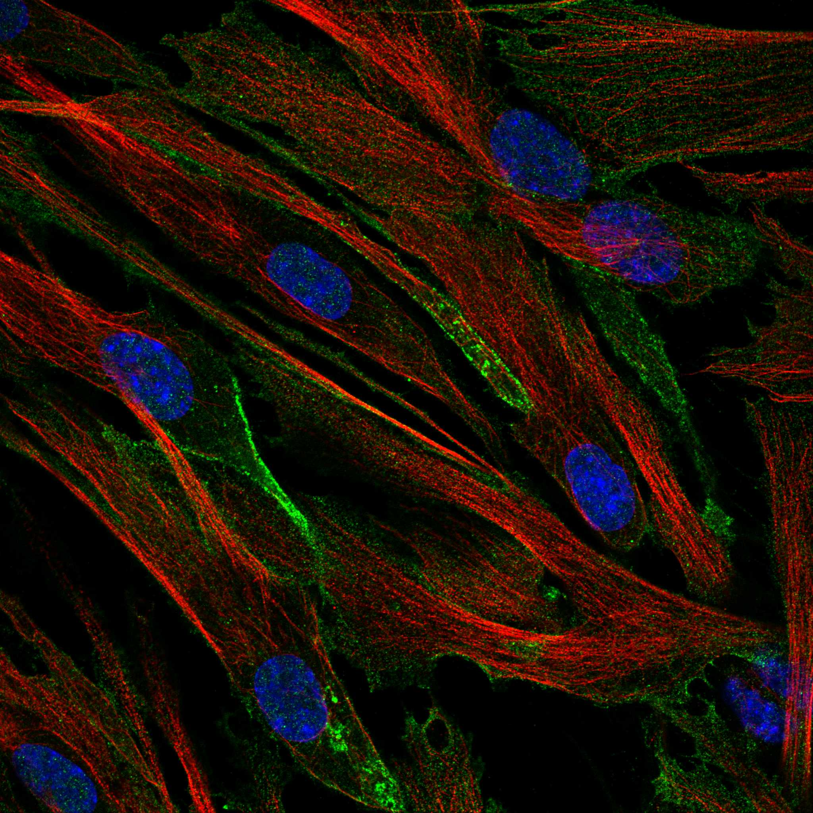
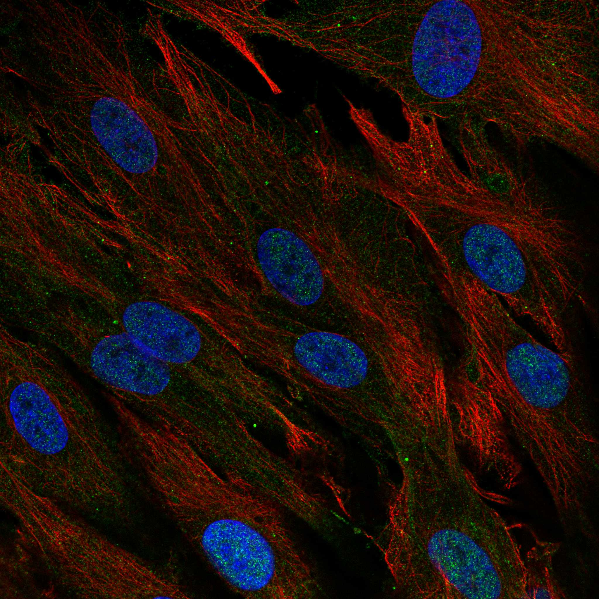
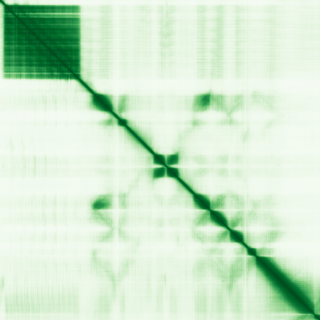

type: protein-evaluation gene: "ANKRD35" date: 2026-05-29 tags: [protein-scout, nuclear-protein, evaluation] status: scored ---
ANKRD35 核蛋白评估报告
1. 基本信息
| 项目 | 内容 |
|---|---|
| 基因名 / 别名 | ANKRD35 / Ankyrin repeat domain-containing protein 35 |
| 蛋白大小 | 1001 aa / 109.9 kDa |
| UniProt ID | Q8N283 |
| 评估日期 | 2026-05-29 |
2. 评分总览
| 维度 | 得分 | 满分 | 加权后 | 关键证据摘要 |
|---|---|---|---|---|
| 核定位特异性 | 4/10 | ×4 | 16 | HPA IF: Plasma membrane (main) + Nucleoplasm (additional, approved), 核质为二级定位 |
| 蛋白大小 | 8/10 | ×1 | 8 | 1001 aa (800-1200 aa区间) |
| 研究新颖性 | 10/10 | ×5 | 50 | PubMed 5篇，极度新颖 |
| 三维结构 | 6/10 | ×3 | 18 | AlphaFold pLDDT 65.81 (mean), 54.2% >70, baseline |
| 调控结构域 | 7/10 | ×2 | 14 | ANK repeats (x6), baseline |
| PPI 网络 | 1/10 | ×3 | 3 | IntAct 6条 (bacterial artifacts), GO-CC 无 |
| 互证加分 | — | max +3 | +0.0 | 无多源互证 |
| 原始总分 | 109/183 | |||
| 归一化总分 | 59.6/100 |
3. 详细分析
3.1 核定位证据
| 来源 | 定位 | 可信度 |
|---|---|---|
| Protein Atlas (IF) | Plasma membrane (main, approved) + Nucleoplasm (additional, approved) | Approved |
| UniProt | 无 subcellular location 注释, 无 GO-CC | — |
IF 图像:  
结论: 主定位为质膜（Approved），核质为附加定位（Approved）。ASC52telo 和 BJ 细胞系均显示核质+质膜双信号。核质信号可靠（Approved），但并非主导定位。UniProt 无任何定位注释，可能是因为蛋白研究极其有限。
3.2 蛋白大小评估
评价: 1001 aa, 109.9 kDa。中等偏大 (800-1200 aa 区间)，进行生化实验有一定挑战。
3.3 研究现状
| 指标 | 数值 |
|---|---|
| PubMed 总数 | 5 |
| 最早发表年份 | 2016 |
| Chromatin/epigenetics 比例 | 0% |
主要研究方向:
- ccRCC 中 sunitinib 耐药 (E3 ligase RBCK1-ANKRD35-MITD1-ANXA1 axis)
- CML imatinib 耐药 (DAH9 variation)
- 单卵双生子体细胞突变分析
- 癌症相关基因变异频率
- 染色体重组历史
关键文献: 1. Wang Y et al. (2023). "The E3 ligase RBCK1 reduces the sensitivity of ccRCC to sunitinib through the ANKRD35-MITD1-ANXA1 axis". *Oncogene*. PMID: 36732658 2. Yamamoto K et al. (2024). "Functional landscape of genome-wide postzygotic somatic mutations between monozygotic twins". *DNA Res*. PMID: 39306676 3. Yildirim MS et al. (2022). "Dynein axonemal heavy chain 9 M4374I variation may have an effect on imatinib mesylate resistance in CML". *Med Int (Lond)*. PMID: 38938903 4. Lavrov AV et al. (2016). "Frequent variations in cancer-related genes may play prognostic role in treatment of patients with chronic myeloid leukemia". *BMC Genet*. PMID: 26822197 5. Ruiz-Arenas C et al. (2020). "Identifying chromosomal subpopulations based on their recombination histories advances the study of the genetic basis of phenotypic traits". *Genome Res*. PMID: 33203765
评价: 仅 5 篇，极度新颖。唯一的功能研究 (Wang et al. 2023, Oncogene) 涉及 ccRCC 中的 E3 ligase 信号轴，提示 ANKRD35 可能参与泛素化调控。其余均为遗传变异关联研究。核质定位的功能完全未知。
3.4 三维结构分析
| 指标 | 数值 |
|---|---|
| AlphaFold 平均 pLDDT | 65.81 |
| pLDDT >90 占比 | 18.7% |
| pLDDT 70-90 占比 | 35.5% |
| pLDDT <50 占比 | 28.8% |
| 可用 PDB 条目 | 0 |
PAE 图: 
评价: AlphaFold 低至中等质量预测 (mean pLDDT 65.81)，54.2% 残基 >70。N 端 ANK repeats (53-247) 折叠质量尚可，但蛋白多处存在显著无序区域 (256-296, 352-482, 559-601, 879-902)。中间区域另有 4 个未注释折叠域。无 PDB 实验结构。baseline 评分。
3.5 结构域分析
| 来源 | 结构域 |
|---|---|
| UniProt InterPro | Ankyrin repeat, RAI14/UACA |
| Pfam | Ank_2 |
| SMART | ANK |
| PROSITE | ANK_REP_REGION, ANK_REPEAT |
| UniProt Features | 6 ANK repeats [53-247], 4 unannotated folded regions [295-344], [610-696], [733-810], [851-968] |
染色质调控潜力分析: ANK repeats 是蛋白-蛋白相互作用支架。RAI14/UACA 同源区域与 retinoic acid-induced 蛋白相关，但与染色质无直接关联。ANKRD35 有 4 个未注释折叠域，可能存在未发现的功能域。baseline 评分。
3.6 PPI 网络
实验验证互作 (IntAct):
| Partner | 方法 | 功能类别 | 调控相关？ |
|---|---|---|---|
| Bacillus anthracis 蛋白 (contaminant) | Two-hybrid | 细菌蛋白 | 否 |
STRING 预测互作: API 不可用。
已知复合体成员 (GO Cellular Component):
- 无 GO-CC 注释
PPI 互证分析:
- IntAct 实验验证: 6 条，均为细菌 Two-hybrid artifact
- GO-CC: 无注释
- 调控相关比例: N/A
评价: 无可靠的 PPI 数据。IntAct 中 6 条互作全部来自细菌双杂交伪影。极度新颖导致 PPI 数据缺失，属正常现象。
3.7 多库互证
| 维度 | 来源 | 结果 | 是否一致 |
|---|---|---|---|
| 定位 | Protein Atlas IF / UniProt | Nucleoplasm+PM vs 无注释 | UniProt 无数据 |
| 结构域 | UniProt / Pfam / SMART | ANK repeats 多库确认 | 一致 |
互证加分明细: 0 总分: +0.0 / max +3
4. 总体评价
推荐等级: (1/5)
核心优势: 1. 极度新颖 (5 篇 PubMed) 2. 核质定位 Approved (HPA IF) 3. AlphaFold 中有 4 个未注释折叠域
风险/不确定性: 1. 核质为二级定位，主导为质膜 - 核质功能可能有限 2. UniProt 无任何定位注释 3. 无 PPI 数据或 GO-CC 注释 4. 蛋白较大且有显著无序区域 5. 唯一的 Oncogene 功能研究依赖 ANKRD35 在 RBCK1-MITD1-ANXA1 轴中的间接角色
下一步建议:
- [ ] 独立验证核质定位
- [ ] 鉴定核质内互作 partners
- [ ] 探索 4 个未注释折叠域的功能
5. 数据来源
- UniProt: https://www.uniprot.org/uniprotkb/Q8N283
- Protein Atlas: https://www.proteinatlas.org/ENSG00000198483-ANKRD35/subcellular
- PubMed: https://pubmed.ncbi.nlm.nih.gov/?term=%22ANKRD35%22
- AlphaFold: https://alphafold.ebi.ac.uk/entry/Q8N283
PPI 网络（三源综合）
| Partner | Source | Score/Evidence |
|---|---|---|
| 无记录 | — | — |
IntAct 有限记录。无 BioGrid 补充数据。
PAE 图像已获取。结构判断基于 AlphaFold pLDDT 统计。
<!-- DOMAIN_HUMANPPI_REPAIR_START -->
Domain/SMART 与 humanPPI 补充（2026-06-07）
SMART / UniProt domain
| Source | Data |
|---|---|
| UniProt | Q8N283 |
| SMART | SM00248; |
| UniProt Domain [FT] | 未检出显式 UniProt Domain feature |
| InterPro | IPR002110;IPR036770;IPR042420; |
| Pfam | PF12796; |
humanPPI / HPA Interaction
Source: https://www.proteinatlas.org/ENSG00000198483-ANKRD35/interaction
| Partner | Datasets | AF3/HPA structure |
|---|---|---|
| MITD1 | Biogrid | false |
| RBCK1 | Biogrid | false |
| SUMO2 | Biogrid | false |
<!-- DOMAIN_HUMANPPI_REPAIR_END -->